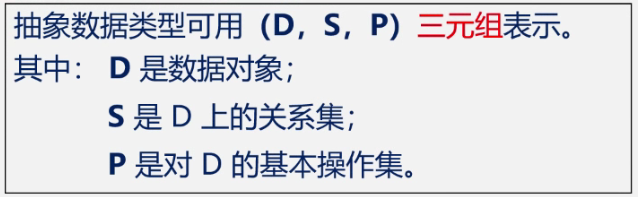

1/8 绪论
1.1 数据结构的研究内容：
数据结构是一门研究非数值计算的程序设计中计算机的操作对象以及他们之间的关系和操作的学科。
- 人事管理系统：增、删、改、查、排序，线性关系
- 人机对弈问题、文件系统的系统结构图：树形结构
- 最短路径：网状结构
1.2 基本概念和术语：
- 数据data ≥数据对象>数据元素data element（数值型，非数值型）>数据项data item
- 一个学生信息表可称为数据，里面一个学生可以看作一个数据元素，一个学生有姓名性别学号等多个数据项，其中所有男生可以组成一个数据对象
- 数据结构data structure =逻辑结构+储存结构+数据的运算和实现（增、删、改、查、排序）
- 逻辑结构包括线性结构（最多只有一个直接前趋和一个后继，线性表、栈、队列、串）和非线性结构（多个前后，树、图）
- 存储结构包括：顺序存储结构、链接存储结构（用指针连接，当前元素的值和下一个元素的地址）、索引存储结构index、散列存储结构
1.3 数据类型和抽象数据类型
- 数据类型data type 是一组性质相同的值的几何以及定义于这个值集合上的一组操作的总称
- 数据类型=值的几何+值集合上的一组操作
- 抽象数据类型=数据的逻辑结构+抽象运算
- 抽象数据类型Abstract Data Type, ADT的形式定义：

基本操作应包含：参数表（引用参数以&打头），初始条件，操作结果
下面是以建立圆的数据类型的伪代码：

以上小总结：

1.4 算法和算法分析
算法是指令的有限序列，解决问题的方法和步骤
算法的描述：自然语言、流程图、伪代码类语言、程序代码
程序=数据结构+算法
算法特性：有穷性（有穷步骤/有穷时间）、确定性、可行性、零个或多个输入、一个或多个输出
算法设计的要求：正确性Correctness、可读性Readability、健壮性Robustness（鲁棒性，对非法输入数据能恰当的作出反应）、高效性Efficiency
高效性：主要考虑算法效率：时间效率+空间效率，这两者时常相矛盾
用事前分析的方法对算法的时间效率做出估算：
算法运行时间=Σ每条语句频度（语句的执行次数） x 该语句执行一次所需的时间，假设执行每条语句所需的时间均为单位时间，就可以脱离机器设备的性能，用每条语句的频度之和直接衡量时间效率
为了比较不同算法的时间效率，仅比较他们的数量级
若有某个辅助函数f(n)，使得当n趋近于无穷大时，T(n)/f(n)的极限值为不等于零的常数，则称f(n)是T(n)的同数量级函数。记作T(n)=O(f(n))，称O(f(n))为算法的渐进时间复杂度(O是数量级的符号)，简称时间复杂度。
$$
T(n)=O(F(n))
$$
分析算法时间复杂度的基本方法：
- f(n)是多项式时，T(n)取最高次项。

$$
语句频度=ΣΣΣ1=ΣΣj=Σi(i+1)/2
=n(n+1)(n+2)/6=O(n^3)
$$
时间复杂度T(n)按数量级递增顺序为：

评论